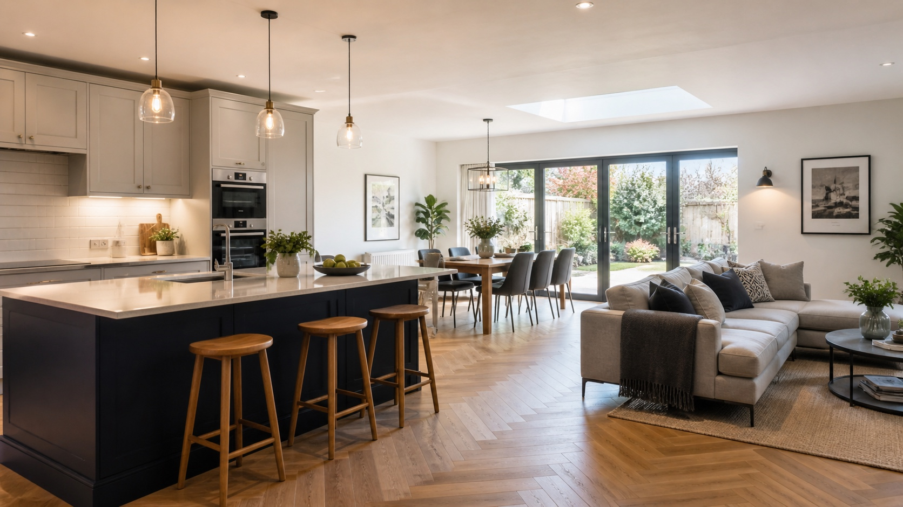

Full Kitchen Renovations
Refresh tired kitchens with new layouts, finishes, fittings, storage and practical improvements from start to final handover.
Create a kitchen that feels brighter, more practical and better suited to everyday life with Essex Builders. We help homeowners across Colchester with kitchen renovations, kitchen refurbishments, kitchen fitting, kitchen installation, layout improvements, worktops, tiling, flooring, plumbing, electrics and finishing work.

From tired kitchens to open-plan family spaces, we help create cleaner, more practical and better-finished kitchens for Colchester homes.
A well-planned kitchen renovation can make a huge difference to how your home feels and functions. Whether you need a better layout, more storage, new units, fresh worktops, improved lighting or a complete kitchen refurbishment, the right finish should suit the way you cook, live and spend time at home.
Essex Builders provides kitchen renovations in Colchester for homeowners who want reliable workmanship, practical advice and a finished space that feels clean, modern and easy to use.
We can help with standalone kitchen refurbishments, kitchen remodels, kitchen installations, kitchen-diner renovations and kitchen upgrades as part of a wider home renovation, home extension or open-plan living project.
Every kitchen project is different. Essex Builders can help with practical upgrades, full refurbishments and the building work needed to create a better kitchen space.
Refresh tired kitchens with new layouts, finishes, fittings, storage and practical improvements from start to final handover.
Update key parts of your kitchen with new surfaces, tiling, flooring, decorating and a cleaner finished look.
Improve the way your kitchen works with better flow, more usable storage and smarter everyday access.
Plan practical lighting, sockets and electrical preparation to support a modern, usable kitchen space.
Coordinate plumbing and preparation work for sinks, appliances, taps, utility connections and kitchen upgrades.
Create a brighter kitchen-dining area as part of a home renovation, kitchen extension or layout improvement project.

A good kitchen renovation needs careful planning so the finished room works properly day to day. We help you think through layout, access, preparation work, plumbing, electrics, finishes, storage, flooring and how the kitchen connects with the rest of your home.
Tell us about your current kitchen, what you want to improve and the finish you have in mind.
We look at the room, layout, access, existing finishes and preparation work needed.
You receive straightforward pricing and a clear understanding of what is included before work begins.
We help plan the order of work, materials, access and how to keep disruption as low as possible.
Our team carries out the work with tidy site management, clear communication and attention to detail.
We complete the finishing work so your kitchen is clean, practical and ready to use.
Kitchen renovation costs vary depending on the size of the room, the condition of the existing kitchen and how much preparation work is needed before the new finish can be installed.
A simple kitchen refurbishment will usually be different to a full kitchen remodel, kitchen installation, open-plan kitchen-diner renovation or project connected to a home extension. We look at the actual room first so your quote is based on the work required, not a vague online estimate.
The room size, current layout and whether appliances, sinks or walls are moving can all affect the scope.
Cabinet choice, worktop material, storage requirements and fitting detail influence the final budget.
Sockets, lighting, appliance points, extractor positions, sinks and dishwasher or washing machine connections may need planning.
Flooring, splashbacks, wall tiling and surface preparation can change the finish and overall project cost.
Kitchen-diner projects, knock-throughs and extension-linked kitchens may involve extra preparation and building work.
Plastering, decorating, trims, handles, lighting detail and finishing touches complete the space properly.
A kitchen renovation can be part of a larger plan to create more space, improve the layout or modernise key rooms. Essex Builders can also help with extensions, garage conversions, home renovations and bathrooms.
You can also explore our full range of building services in Colchester, including extensions, renovations, garage conversions, kitchens and bathrooms.
Essex Builders provides kitchen renovations and kitchen refurbishment work across Colchester and nearby Essex areas, helping homeowners improve layouts, refresh tired kitchens and create better everyday living spaces.
We also cover nearby areas including West Bergholt, Great Horkesley, Dedham, Brightlingsea, Rowhedge, Copford, Eight Ash Green, Ardleigh, Elmstead Market and surrounding Essex areas.
Not sure whether to rework or enlarge the room? Compare a kitchen extension with a kitchen renovation and learn how to plan an open-plan kitchen-diner around storage, light and circulation.
Here are a few common questions from homeowners planning a kitchen renovation or kitchen refurbishment in Colchester.
Yes. Essex Builders provide kitchen renovations and kitchen refurbishment work across Colchester and nearby Essex areas, including kitchen fitting, layout improvements, units, worktops, tiling, flooring, plumbing, electrics and finishing work.
Yes. We can help with practical layout improvements, better storage, open-plan kitchen-diner ideas, new finishes and the preparation work needed to make your kitchen easier to use.
The cost depends on the size of the kitchen, preparation work, units, worktops, appliances, plumbing, electrics, tiling, flooring, plastering and final finish. We provide a clear quote after seeing the room and understanding the work required.
Yes. We can help with kitchen installation and the associated preparation work, including fitting, plumbing, electrics, tiling, flooring, plastering and finishing details.
Yes. We can help with the finishing work that makes a kitchen renovation feel complete, including plastering, tiling, flooring and general finishing.
Yes. Kitchen renovations are often carried out as part of a rear extension, open-plan kitchen-diner or wider home renovation project.
Timescales depend on the amount of preparation, plumbing, electrics, tiling, flooring, fitting and finishing work required. We will give a realistic timescale once we have seen the kitchen and confirmed the scope.
Yes. We provide free, no-obligation quotes for kitchen renovations, kitchen refurbishments and kitchen installation work in Colchester and surrounding Essex areas.
Yes. We cover Colchester and surrounding areas including Stanway, Lexden, Wivenhoe, Tiptree, Marks Tey, Kelvedon, Witham, Maldon, West Mersea, Manningtree and Clacton-on-Sea.
Tell us what you have in mind and we’ll help you understand the best next step, whether you want a full kitchen renovation, kitchen refurbishment, new kitchen installation, improved layout or brighter open-plan kitchen-dining space.